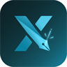

Chỉ bật một chế độ dùng tab X. Dừng chế độ đang chạy trước khi bật chế độ khác.
Mở X để kết nối và kiểm tra phiên đăng nhập.
Điều chỉnh nguồn và hành động tại tab Hành vi.
Đồng bộ chiến dịch Pogo qua API và dán list link bài X để agent xử lý.
Bỏ qua bài của bạn trong Pogo và list link. Nhập username của tài khoản X đang dùng.
Kết nối Telegram → Quét → mở link trên X
Token Pogo đang đúng hồ sơ X của bạn?
Tự cấp Bearer qua Telegram; task, lượt RT và giờ đối soát lấy từ API.
Chưa bật tự cấp token. Cần hoàn tất thiết lập chương trình Telegram trên máy.
Chưa đọc giờ đối soát từ API.
Dán list link bài X; agent làm theo hành động đã bật ở tab Hành vi.
Chưa có link. Dán chat/log rồi bấm Chuẩn hóa, hoặc mỗi dòng một URL.
Lọc, tìm và mở bài Pogo đã quét về.
Quét mỗi phút. Tự join khi bật. Báo bot Telegram khi có bounty mới hoặc khi join.
FCFS: bật tự join khi không cầm máy. Bot Telegram báo bounty mới / đã join (cần Setup thông báo Telegram).
Chưa quét bounty.
Nguồn · hành động · nhịp chạy — nhóm rõ, lưu một lần là đủ.
Chọn nguồn → bật hành động → chỉnh tỷ lệ nâng cao → Lưu cấu hình.
Handle của bạn và khoảng nghỉ giữa các tương tác.
Áp dụng sau khi tương tác xong. Chỉ tìm bài: chờ 2–4 giây mỗi đợt cuộn. Đọc bài dùng khoảng riêng; giữa hành động vẫn 6–16 giây.
Bật nguồn được phép dùng. List link (nếu bật) trước Pogo.
Chỉ chạy khi xong việc đang làm. Gợi ý 60 phút nếu Pogo/feed là chính; 15 nếu muốn reply nhanh.
Đồng hồ chỉ đếm lúc đang đọc/cuộn. Tạm dừng khi mở bài, soạn Reply/Quote, nghỉ hoặc Pause. Thông báo xử lý riêng.
Chỉ tick những gì muốn agent làm.
Đặt 0 = không giới hạn. Reset 00:00 giờ Việt Nam.
Follow cộng dồn Agent + tab Follow. Giới hạn 30 phút dùng chung. Không tự tăng tốc để đủ số.
Tick hành động = cho phép. Agent quét bài rồi mới xét tỷ lệ. Reply → mở bài, soạn và tự gửi.
Nhập 500 = chỉ Follow khi Sorsa >500. Thiếu điểm hoặc bằng ngưỡng → bỏ qua. Bộ lọc tab Follow vẫn áp dụng thêm.
Theo dõi tài khoản mới hoặc dọn danh sách Following — chọn chế độ bên dưới.
Chọn nguồn và bộ lọc trước khi bắt đầu.
Nhập danh sách riêng hoặc lấy người theo dõi của một tài khoản.
Chỉ áp dụng danh sách tài khoản/link. Chọn bài mới nhất của chính tác giả, không nhầm bài ghim cũ hoặc bài đăng lại. Reply dùng AI đã lưu; Like/Reply vẫn theo hạn mức ngày và chống gửi trùng.
Chỉ theo dõi tài khoản đáp ứng bộ lọc.
Chọn nguồn và điều kiện trước khi bắt đầu.
—
Đã xem 0 tài khoảnQuét Following hoặc nhập danh sách riêng.
Để trống để nhận diện từ tab X đang kết nối.
Mỗi dòng một tài khoản, hoặc phân cách bằng dấu phẩy. Chỉ xử lý tài khoản trong danh sách Following của bạn; không mở profile.
Chọn những tài khoản cần dọn khỏi Following.
Xử lý trước trong nguồn đã chọn; vẫn phải thỏa mọi điều kiện hủy và quy tắc giữ.
Danh sách giữ luôn thắng danh sách ưu tiên hủy. Chỉ cần khớp một quy tắc giữ là tài khoản được giữ lại. Chưa xác định được dữ liệu cần thiết thì bỏ qua.
Follow xong hoặc đã Following sẵn: tự chuyển khỏi list chờ sang đây. Chưa kiểm tra sẽ hiển thị “chưa rõ”.
Cấu hình dịch vụ, đặt đơn và theo dõi kết quả.
Hai preset riêng. Chỉ dùng View thì chỉ cần điền View ID — Like để trống.
Chưa lưu key.
Tải dịch vụ rồi chọn ID loại Default.
Nhập link bài trên X và chọn loại tương tác.
Một lần một loại. Chỉ muốn view → chọn View rồi Đặt đơn.
Sẽ dùng View ID · ×—
Tìm bài dưới ngưỡng tương tác bạn đã đặt.
Chỉ auto View: để trống mã Like (hoặc Min like = 0). Chỉ auto Like: để trống mã View (hoặc Min view = 0). Dừng quét vẫn đặt đơn cho bài đã tìm thấy.
Sẵn sàng quét.
Kết nối nhà cung cấp và tùy chỉnh cách AI viết nội dung.
API key dùng để soạn trả lời và trích dẫn.
Key để soạn Reply/Quote. Bật/tắt hành động ở tab Hành vi.
Chưa lưu API key.
Pogo và nút ✨ / lướt X có thể chọn model riêng ở mục hướng dẫn bên dưới.
Với model OpenAI GPT-5/6, extension dùng reasoning low và không gửi Temperature. Max tokens bao gồm cả reasoning; có thể bắt đầu với 2048 rồi điều chỉnh theo kết quả và chi phí.
Bật từng loại nội dung và chỉnh hướng dẫn khi cần.
Chỉ chiến dịch Pogo. Prompt + model riêng, không dùng cho nút ✨ hay lướt X. Placeholder: {{author}} {{text}} {{tweet_url}} {{tweet_id}}.
Home / Following / Lists, list link và nút ✨. Đóng góp góc nhìn cụ thể, thường 15–45 từ và tối đa 280 ký tự, đúng ngôn ngữ bài gốc. Lướt News Feed ngẫu nhiên được phép SKIP_REPLY. Nút ✨ và list link do bạn chọn luôn yêu cầu tạo reply, không nhận SKIP_REPLY. Nếu thiếu ngữ cảnh, trả lời phần có căn cứ hoặc hỏi làm rõ, không bịa thông tin. Để trống model riêng để dùng model chung.
Chỉ mention/reply trực tiếp tới bạn, không trả lời bài mới từ tài khoản bật chuông. Giữ đúng người nói và ngôn ngữ mention; không gán chi tiết ảnh của người khác cho tác giả hiện tại. Agent tự đăng sau khi AI soạn xong. Nút ✨ tự chọn mục này khi nhận diện mention/reply; không nhận SKIP_REPLY từ AI, nhưng chặn trước khi gọi AI nếu đã có bằng chứng trả lời/gửi đúng tweet. Agent tự tìm Mentions vẫn được bỏ qua spam/thiếu ngữ cảnh. Biến: {{author}} {{text}} {{tweet_url}} {{tweet_id}} {{parent_text}} {{conversation_context}} {{already_replied}}. Không đủ bằng chứng thì trạng thái là unknown, không coi là chưa trả lời. Ngữ cảnh đọc được vẫn bổ sung khi template thiếu biến. Để trống model riêng để dùng model chung.
Placeholder: {{author}}, {{text}}, {{tweet_url}}, {{tweet_id}}
Chi phí ước tính theo token API trả về và đơn giá bạn nhập; chưa gồm thuế, tín dụng hay phụ phí. Ghi nhận cả lượt soạn, kiểm tra, viết lại và bỏ qua. Không khôi phục được chi phí trước khi bật tính năng. Dữ liệu lưu riêng trên Chrome này.
Nhập theo nhà cung cấp hoặc proxy bạn đang dùng. Nếu không có giá cache riêng, nhập bằng giá đầu vào. Để trống cả ba = chưa đặt giá; nhập 0 nếu miễn phí. Thay đơn giá sẽ tính lại toàn bộ lịch sử. Reasoning đã nằm trong token đầu ra, không cộng lần nữa. Chưa bao gồm phụ phí công cụ, cache write hoặc media tính riêng.
Theo dõi hành động đã thực hiện và các lỗi cần xử lý.